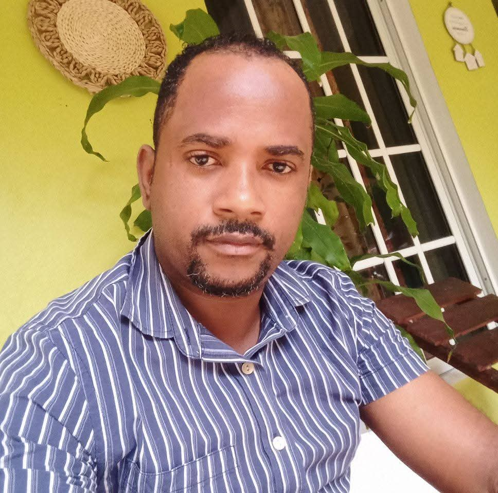
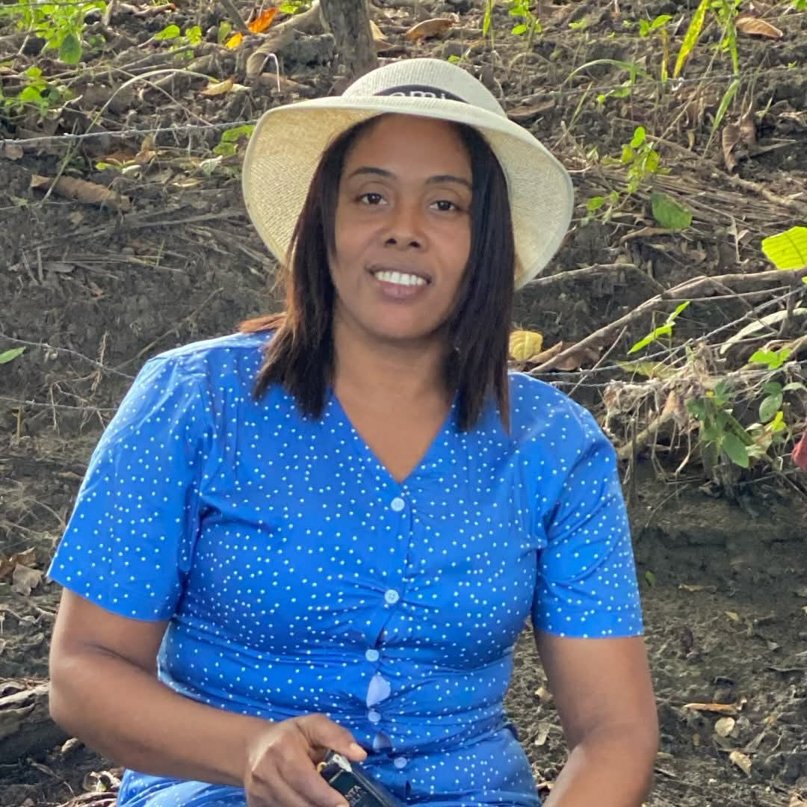

Conoce a los Pilares de Nuestra Aventura

José René Tejada
CO-FUNDADOR Y LÍDER DE EXPEDICIONES
José, con su inagotable espíritu aventurero y su profundo conocimiento geográfico, es el motor de exploración de Aventura Sin Fronteras. Su pasión garantiza que descubramos y ofrezcamos los destinos más auténticos y las rutas menos transitadas, haciendo de cada viaje una verdadera expedición.

Mircauri Batista
CO-FUNDADORA Y ARQUITECTA DE EXPERIENCIAS
Mircauri es la encargada de la magia organizativa. Combina su amor por la inmersión cultural y una planificación impecable para diseñar itinerarios personalizados y sin contratiempos. Su visión se centra en crear experiencias que conecten a nuestros viajeros profundamente con cada lugar.